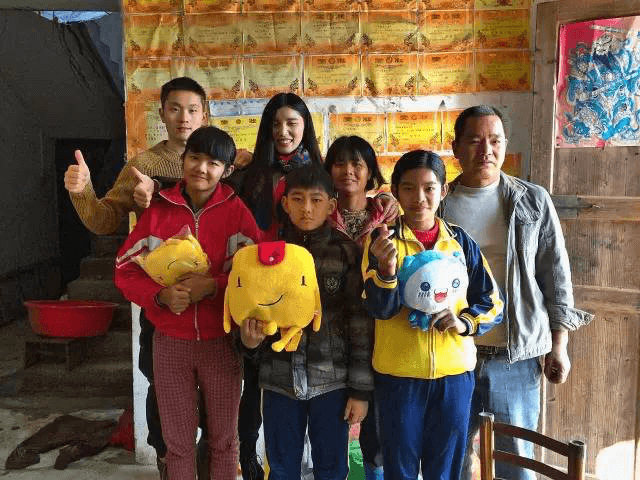

返回
荷包金融：感恩陪伴，我们用最好玩的方式打开2017
扬子晚报 2017-1-18 17:01
1月8日晚，“为你，我承包了整个珠江夜景”——荷包金融2016年终答谢趴体在美丽的广州珠江游船上欢乐举行，共有140余名荷包投资用户应邀出席。本次活动旨在感谢荷包用户们一直以来的支持与信赖，活动全程在豪华游船上进行，不仅饱览了沿途流光溢彩的珠江夜景，船上丰富美味的海鲜自助餐、精彩纷呈的节目表演、暖心朴实的用户故事分享、激动人心的抽奖一次次地嗨翻全场，荷包与用户们一起船上狂欢，用最好玩的方式打开2017……
炫酷热辣的开场舞，拉开了整场活动的帷幕
爱的抱抱游戏，瞬间感觉船震了~~
广州南方电视台特约魔术师洪仲欣现场变百元大钞调戏萌妹子~
最后变出的超大1元硬币，引来大家的围观
最让人印象深刻的还是三位远道而来的荷包明星用户带来的理财分享。其中一名用户“石头先生”坦言道，“刚接触荷包，对荷包APP的产品设计，产品交互，用户体验都很是欣赏。和大家不一样的是，我也是敲代码的，深知开发一个这样有创意和用户体验这么好产品是多么不容易，这个APP背后是多少人的付出和努力加班的成果。注册的第二天，我就充值了六位数进去，同事说我太大胆，年化这么高，不怕跑路么?我回答说，这样的产品，站在技术的角度，我相信他们，因为他们是用心在做这款产品。现在回想起来，那是一种怎样的心情，就和今天一样，是一种找到组织的感觉。”……这三名用户都已经陪伴荷包400多天，看着荷包点点滴滴的成长，在给他们的生活带来别样精彩的同时，他们也不约而同地对荷包寄予了更高的期望，希望荷包更加稳定，更加强大，在2017带去更多的收获!

当然，最激动人心的还是抽奖环节，每一位到场的用户都能获得荷小包，现场奖品还送出了零钱包、小米手环、拍立得和iphone6s大奖。
晚上8点半，随着游船的靠岸，荷包金融2016年终答谢趴体也圆满收官。2017，即将迎来荷包两周年庆。两年前，荷包从众多如雨后春笋般涌现出的新平台中孕育而生，让人充满惊喜。两年走来，荷包凭借出色的产品设计和用户体验，以及安全和收益并肩的投资理念，与广大投资者们一步步地建立起了信赖与忠诚。2017年荷包金融能做的依旧是脚踏实地，跟着主旋律前进，迎来安全体系、产品体系、资产体系的全面升级。
返回
荷包金融发力布局金融科技，Fintech公司正式成立
中国财经 2016-12-19 12:34
法国教育家爱尔维修曾说：“即使是普通孩子，只要教育得法，也会成为不平凡的人。”罗曼.罗兰也说过：“即使在最丑的孩子身上，也有新鲜的、无穷的希望。”
今年11月，荷包金融联合自游穿越俱乐部发起了“99爱公益，行走远方”助学活动，呼吁荷包用户们一起关注关爱山区的贫困和留守儿童，用实际行动去照亮他们的心灵。
活动启动后反响热烈，很多爱心用户纷纷参与进来。11月27日和12月11日，荷包金融志愿者们带着爱心用户捐赠的文具、体育用品和保暖衣物走进了粤北连州满地村的鱼田小学和河源市和平县阳明镇大楼村大楼小学，和孩子们亲切互动。
志愿者们完成了爱心物资的派发后，化身为一个个亲切和蔼的“大孩子”，陪孩子们一起玩起了游戏，共同度过了一堂生动有趣、爱心十足的体育课。

结束了在学校里和孩子们的欢乐互动，此行志愿者们还去到几户困难家庭做了家访，其中家访的一个小朋友叫黄勇杰，因为三个孩子上学没学费，家里房子只建了一半就放下了
黄勇杰父亲腿脚不方便，在连州靠水泥工一天80到90元，妈妈一直在家照顾三个孩子。好在孩子争气，满墙的奖状。
荷包金融开展“99爱公益，行走远方”助学活动——让彼此间经历成长6
(拿着装满了文具用品的荷小包，孩子们很开心)
近年来，随着农村越来越多的家庭夫妻远离家乡外出务工，而他们的孩子只能留守在农村由家中的老人或亲戚代养，这部分留守儿童便成了村里的特殊群体，现在，对这些特殊群体的成长教育已成为当下家庭、学校和社会共同关注的问题。正如荷包金融一名志愿者所说“虽然我们此行没有办法去改变这些留守儿童的处境，也没法改变他们父母的选择，但是我们仍然可以尽一点绵薄之力，帮助他们一点点拾回最灿烂的笑容”!

虽然此次活动已经结束，但是荷包金融的公益之行才刚刚起步，作为一家互联网金融企业，荷包金融做公益不是为了立刻获得一声“感谢”，而是希望在做公益的过程中，既能切切实实地帮助到社会的一些弱势群体，又能激发出整个团队的责任感、创新思维和奉献精神，让彼此之间都经历成长。
返回
荷包金融发力布局金融科技，Fintech公司正式成立
中国网 2016-12-09 09:55
继10月14日宣布与香港上市企业新融宇集团(股票代码01152)合资设立新公司之后，近日，荷包金融在金融科技领域又迈进了一步，其新公司荷包(深圳)信息科技有限公司于11月25日取得营业执照，正式注册成立。
荷包(深圳)信息科技有限公司(以下简称“荷包科技”)将基于大数据，在云计算、人工智能、区块链等一系列技术领域不断创新，帮助互联网移动支付、网络信贷、智能金融理财服务行业大力提升服务效率和便利，降低投资理财及运营成本。
经过近两年的市场积累，荷包金融开拓了一个主打“小白”理财，以极致用户体验致胜的理财平台。未来，荷包金融也将利用荷包科技在风控模型以及大数据、人工智能、区块链等技术领域的不断升级，建立一套更为标准化的核心风控体系，实现更高效的信用获取和管理。
同时，荷包也正在和世界四大会计事务所之一的Deloitte(德勤会计事务所)进行合作，由Deloitte提供审计、企业管理咨询、财务咨询等服务。未来，荷包在金融科技领域会有更多动作。
附：荷包(深圳)信息科技有限公司董事长吴凯及董事王天宇、王俐履历介绍
吴凯：
1996年毕业于厦门大学，主修国际经济关系并获得经济学学士学位，2010年7月获得清华大学经济管理学院工商管理硕士学位。在进出口贸易、国际投资及经济分析方面拥有20余年经验。
王天宇：
曾任职于加拿大UBC大学，并担任多家北美公司的科技顾问，后担任香港上市集团副总裁。逾20年数据研究及IT管理经验。
王俐：
毕业于加拿大维多利亚大学并获得经济金融本科学位，持有加拿大投资基金牌照。曾任职于加拿大帝国商业银行和汇丰银行，拥有12年国内外金融从业经验，熟悉多种金融产品及市场，具备极强的管理和团队合作能力。
返回
荷包金融荣获第一财经 “2016最佳市场影响力互联网金融公司”奖
搜狐财经 2016-11-19 17:39
11月18日晚，由第一财经打造的年度金融品牌评选——“第一财经金融价值榜”在北京金融街正式揭幕，荷包金融受邀出席了此次颁奖盛会并在当晚的评选活动中荣获“最佳市场影响力互联网金融公司”奖项。
据了解，这是荷包金融继2015年获得第一财经金融价值榜“最佳创新互联网金融公司”之后再度拿奖，对于此次能再获殊荣，荷包金融负责人表示，这是对荷包今年取得的成绩和一直以来坚持“用户体验至上”理念的肯定和鼓励。每一次加班熬夜讨论产品优化，每一笔资产项目的尽职调查，每一次专业快速的客户服务……荷包始终在向用户倡导一种“简单快乐“的理财观，这种追求极致的用户体验也让投资者为我们做了最好的口碑传播，使得荷包能在品牌林立、竞争激烈的互联网金融市场迅速占领一席之地并不断发展壮大。
作为一家专注于手机端理财的产品，荷包自2015年3月上线以来可谓上演了一场互金届的“极速前进”，截至2016年10月底，注册用户已经突破700万，累计撮合成交额达300多亿，其中活跃用户占比接近40%，这在网贷行业普遍不足三成的转化率里极具竞争力和影响力，成为了名副其实的后起之秀。此外，荷包在收益发放上实行每日结算并即时到账，收益还可继续投资，真正做到了“收益放心到口袋”，用户安全感倍增。值得一提的是，荷包简洁流畅的交互设计、快捷清晰的操作指引以及独具风格的内容和用户运营成为了本次评选调查中最为投资者们称道和行业备受关注的焦点，被不少互联网金融企业争相学习和借鉴。
随着今年8月《网络借贷信息中介机构业务活动管理暂行办法》的颁布，很多网贷平台开始谋划转型，荷包金融表示，在无常的市场面前，我们的缰绳只有两条：合规和风控。一直以来，荷包都坚守着互联网金融信息中介定位，坚持小额普惠与安全并驾齐驱，一方面解决个人消费信贷和中小微企业融资难融资贵问题，用互联网科技践行普惠金融政策，另一方面，通过平台严格的风控管理，始终将投资人的资金安全放在首位。
而在未来，荷包会如何释放平台更大的市场潜力和活力，荷包金融表示， 面对目前正在蓬勃发展的金融科技领域，荷包金融也已经做好布局。今年10月，荷包与香港上市企业新融宇集团(01152)成立合营企业，重点进军金融科技领域。同时，荷包也正在和世界四大会计事务所之一的Deloitte(德勤会计事务所)进行合作，由Deloitte提供审计、企业管理咨询、财务咨询等服务。未来，荷包在金融科技领域会有更多动作。
返回
荷包金融携手中国扶贫基金会开展公益体验活动
搜狐财经 2016-10-17 16:32
2016年10月16日是联合国确定的第36个世界粮食日,10月17日是中国第三个扶贫日。截至目前全世界有9.25亿人口处于饥饿状态(数据来源于联合国世界粮食计划署官网)；而到2015年中国仍有5575万农村贫困人口(数据来源于2015年国民经济和社会发展统计公报)。
为了让更多人关注贫困，关注饥饿人群，10月16日12点至10月17日12点，荷包金融携手中国扶贫基金会发起了一年一度的“饥饿24小时”公益体验活动，呼吁有条件的荷包用户24小时不吃饭，一起体验饥饿、关注贫困，用省下来的一天餐费来帮助受饥饿困扰的儿童。
活动过程中，荷包用户可以将自己的微信、微博、QQ头像改成“体验饥饿”的活动图标，分享号召身边更多的朋友参与进来。用户通过中国扶贫基金会的“全民公益”活动页面进行捐款，所有筹集的善款50%将用于爱加餐项目，为中国贫困地区的孩子营养加餐，另外50%将用于国际微笑儿童项目，为非洲地区的饥饿儿童供餐。
据了解，荷包金融自平台上线以来，一方面大力开展创新安全稳固的金融服务，另一方面，在互联网金融合规监管下，荷包金融也在不断积极参与社会公益事业，传递企业爱心和社会关怀，今年4月份荷包金融就曾携手中国绿化基金会，举办了“荷包萌的都发芽了，来种我吧”地球日特别活动，号召用户节约资源、爱护环境、关爱地球，保护动植物物种多样性，并通过荷包微信公众号和QQ群转发，获得了荷包用户的大力支持和好评，共有4万多名荷包用户参与了此次活动。
随着互联网金融的持续升温和网贷新规下企业不断的转型升级，荷包金融相关负责人表示，互联网金融将逐渐改掉大众眼中传统的“高冷范”，转而向小额、普惠方向大力前行，未来将会有越来越多的互联网金融企业投身社会公益，走近大众生活，行业也将会更加的“接地气”。
返回
讨论ICP和EDI有啥意义?企业合规才是王道！
金评媒 2016-09-27 08:30
8月24日银监会等四部委联合发布的网络借贷监管细则，除了对借款上限、ICP许可证、金融备案、信息披露等方面有细致要求，还要求平台在银行进行资金存管，不得自设资金池。同时，要求网贷平台具备相关增值电信业务经营许可证，这也设置了较高的门槛。据不完全统计，目前全国90％以上的平台并未获得许可证，仅拥有一个ICP备案证明。但ICP备案并不等于ICP证乃至EDI证。
据记者了解ICP是针对信息服务业务中的互联网信息服务， EDI则针对在线数据处理与交易处理业务，两证针对性明显不同，且电商网站对EDI和ICP许可证有明确的界定。
人人聚财CEO许建文对此表示，现在业内对于P2P的证照问题存在普遍的认识偏差，不管是ICP还是EDI证，都只是在备案存管完成之后的流程性工作。在平台完全合规之后，金融办开具推荐函并最终办理ICP或EDI证应该是水到渠成的。
显然，在《办法》尚未明确“申请相应的电信业务经营许可”，且监管层也未公布电信业务经营许可的办理流程和条件，《指引》没有落地之前，到底哪个证才是传说中的P2P“牌照”，还只是停留在讨论的层面。但可以肯定的是，监管部门通过成熟的电信业务管理体制，来规范网贷行业的业务系统，是一种明智之举。
关于关于监管要求办理EDI证的问题，前不久就有工信部官员在金融四十人会议上做了解读。当时工信部官员就指出，现在增值电信业务许可证有两类，而P2P网贷现在要办理的其实是第二类业务里的“在 线数据处理与交易业务”，也就是所谓的EDI证，而且办理这个证可以直接通过网上申请。不过需要先拿到当地金融监管部门的备案，不然即使办下来了也是不包含互联网金融业务的。荷包金融相关负责人表示，现在问题的关键是，金融监管部门的备案细则还在等银监会的相关指引政策出来。对于这块我们也一直都在密切关注和跟进。
据网贷之家最新数据统计，截至2016年9月19日，拥有EDI证的P2P网贷平台，全国有31家，约占网贷行业正常运营平台总数量的1.4%，而拥有双证的平台更是寥寥无几。
业内人士分析认为，按照新规，网贷平台是信息中介平台，提供信息服务，借款人与出借人又是点对点的借贷关系，因此ICP许可证和EDI许可证的业务范围都有涉及。如果两证同时要求，对于这个行业来说无外乎又加了一重过滤网。
目前关于ICP/EDI证照的问题，究竟是什么证，申请需要多长时间，具体要考察哪些资质，无论是业内还是监管层都没有完全定论，许建文强调说，大家不要道听途说，而以正式的政策公布为准。在政策公布之前，所有未经官方证实的说法都不必过于在意，我们相信，ICP/EDI证绝不是监管层的目的，而是检验合规进程以及平台资质的手段。
截止到目前网贷机构究竟要办理哪一个证，在一切尚未尘埃落定之前，还不能确认。而网贷平台在今后的发展工作中加强自律，给投资人带来更加安全、更有保障产品才是最重要的，至于EDI许可证只需坐等银监会相关政策指引尘埃落定便好。
荷包金融相关负责人表示，这次网贷监管细则的出台对我们来说其实是利好消息，让我们这些从业人员知道以后该怎么走，怎么做才是合规，也让互联网金融行业真正的“有法可依”，我们做起事来也会更加的“有底气”。监管层制定这样的政策意图我们也能理解，现在P2P行业野蛮生长太快，P2P既然不具备很强大的风控能力，就不要去跟银行“抢”了，既然是信息中介，就应该回归本位做小额分散的普惠金融。
许建文则坦言，事实上，对P2P平台来说，最为关键的依然是业务合规、银行存管和主管部门备案，这些才是当下最紧要的也是付出较大成本和时间才有可能解决的事务，而许可证则是上述条件达成后的一个流程性事务，只需要耐心等待监管层的进一步指导意见，遵照办理即可。
返回
荷包金融：支付宝提现收费余额宝免费！剑指线上理财
凤凰网 2016-09-18 13:23
继微信提现收费半年后，12日，支付宝对外公布，自2016年10月12日起，支付宝将对个人用户提现(提现仅涉及提现到个人银行卡或者转账到他人银行)超出免费额度后收取一定手续费。具体为：每位用户享有2万元基础免费提现额度，超出2万元部分将按照银行率收取手续费，目前定为0.1%，每笔最少收0.1元。

“不再免费”对于众多用户来说无疑造成了一定的冲击，对此支付宝方面在公告表示，收费的原因是“综合经营成本上升较快”，调整提现规则是为了减轻部分成本压力。其实早在今年3月微信就开始针对提现收取手续费，给出的理由和支付宝一样。对此，相关业内人士普遍认为，支付宝此举最重要的目的还在于，推广支付宝支付的各种消费应用以及各项金融服务。因为按照支付宝最新的收费与交易规则，用户不花或者降低提现成本使用余额的最好办法就是把余额全部用掉或者通过线上理财的方式实现财产增值。
尤其是支付宝建议使用余额宝更是验证了支付宝线上理财的意图，即用户把余额宝的资金转到支付宝依然免费，或者使用支付宝进行消费、理财、买保险、买基金等各种服务业也将继续免费。同时用户可以通过蚂蚁积分可以兑换更多的免费提现额度。很显然，支付宝试图在鼓励更多的用户往互联网理财方向发展。
荷包金融移动端理财，稳健收益便捷进账
尽管投资余额宝是避免收费冲击的可行方法，多数投资用户对余额宝一降再降的收益却颇感无奈，相对而言，P2P网贷方面在收益上更有优势。比如目前专注移动端理财的荷包金融，在支付宝提现方案一出，荷包金融就受到了更多投资者的关注，其中随存随取的“零钱包”年化收益为8%，每周上涨0.5%，预期年收益率最高可达10.88%，定投项目最高至14.68%，收益当天返还，用户可在收益平台上清晰查看金额。除了零钱包外，还有28天的零钱包定期以及 58天、88天、188天的定期理财产品。相比各大银行定期资金存款的长时间要求，用户完全可以在高收益的情况下自由选择投资期限方式并灵活分配资金。
其实近几年，随着人们理财观念的逐渐开放，P2P平台也开始逐渐规范化和稳健化。P2P理财方式正成为众多投资人心中的理想理财方式。目前主流的平台收益率都在10%左右，这是一个合理的区间，而P2P网贷今年4月的月报显示，中国P2P网贷行业整体成交量在四月为1389.83亿元，环比增长率为3.8%，对比去年同时期的交易量，增长了2.32倍。
此次收费措施，支付宝不但捧红自家的理财产品，对P2P线上理财也带来了新的观念。而于投资者来说，能获得最大利益才能体现投资的价值，所以选择更多的理财方式，也是人们最为关注的一种收益方法，P2P行业的未来发展也将受到越来越多投资人的关注
返回
荷包金融上榜2016年上半年金融类APP TOP100
财经网 2016-08-08 10:14
8月3日，易观智库发布了《2016上半年金融类App TOP100成绩单》，荷包金融从众多金融类APP中脱颖而出，跻身至排名榜71位。
本次排行榜是由易观智库基于易观千帆6月份的移动大数据发起，通过对10亿累计装机覆盖及1.94亿活跃用户的行为监测结果进行分析得出。荷包金融凭借178.7万的月度活跃用户数评选上榜。
荷包金融自2015年平台正式上线以来，一直致力于解决投资者移动端的理财诉求，专注于“荷包”APP的开发运营，目前暂时没有PC端的理财业务。也正是因为这份对产品精益求精的耐心打磨和踏实做事的“匠人”精神，荷包金融得以在投资人圈中收获良好口碑。
“简洁、干净、用户体验做得好”往往是投资者对于荷包金融的第一印象。究其原因，据其工作人员透露，荷包金融团队主要来自传统金融和互联网行业，以金融为本体，同时秉持互联网的核心理念——一切以用户需求为出发点，一方面极大简化用户注册流程，只需要手机号和密码就可注册，在完整体验了一遍产品，想投资时才需要绑定银行卡等信息；另一方面，平台在内容和用户运营上也投入了相当大的精力，除了平日“送体验金”、“红包雨”等活动外，还会经常紧贴热点开展各类互动参与感更强的线上活动，比如7月份大热的“欧洲杯”竞猜活动就吸引了107万多用户的关注，获奖人数超过6万。
此外，荷包金融还开办了“用户故事”专栏，供投资者分享自己的理财和人生故事，目前已做到48期，收到了上千封用户来稿。
正是通过一系列粉丝回馈活动和特色栏目的打造，使得荷包金融在用户活跃度和互动率上表现突出。尤其是其微信公众号（微信号：hebaolicai），在荷包金融，公众号不再是企业自嗨的“传声筒”，“荷大包”、“荷小包”可以任性的和粉丝交朋友，“玩”在一起，还可以在上面一本正经的“胡说八道”……如此接地气的定位和“独树一帜”的传播风格，受到越来越多年轻一族投资者的追捧喜爱，无形中也进一步拉近了企业和用户的距离。从这些也不难看出，在行业普遍4%-20%投资人转化率的大环境里，荷包金融能做到45%以上转化率的个中原因。
返回
余额宝的便捷+P2P的收益，荷包金融打造移动理财in生活
新浪网 2016-07-13 17:27
不同于父辈“银行存款十年定期”的保守理财方式，当下，手里头有些闲钱的小资产阶级们在各自投资理财的道路上走得红红火火。胆子大的早晚都在股市玩心跳，涨时心花怒放，跌时痛心疾首；懒一点的把钱转到余额宝，虽然收益一降再降，但好在十分便捷，每天也都有进账；相当一部分看好P2P较高收益率的更在反复的平台考察对比中，收获投资成果。
当然，如果既想拥有余额宝的便捷，又想收获P2P的高收益，专注打造移动互联网理财入口的荷包金融想必最能讨投资者的欢心。
作为火热互联网金融大军中的一员，不同于多数平台在PC端的大力布局，荷包金融积极响应广大投资者在移动端的理财需求，自平台成立以来始终全力专注于荷包APP的开发和功能完善。目前，荷包APP无论在界面交互，还是功能体验上均获得了投资用户的热情点赞。以下载应用后第一步的注册过程为例，摒弃行业多数同类APP注册时强制要求填写身份证、银行卡等个人信息的繁琐程序，荷包金融将平台注册流程简化为只需填写手机号码和密码即可，人性化的细节设计不仅让追求简单生活的年轻用户在投资时如鱼得水，也切实打破了中老年投资者的互联网理财门槛，显然简便的手机操作更易使其上手。
同时，荷包金融还是业内首家每天结算收益的P2P平台，这一点与余额宝颇为相似，平台用户每投资一天，收益当天实时到账。比起行业普遍的到期收益本金一同返还，荷包金融在金融产品和服务上的这种创新明显更能给用户以安全感。在大家最为关注的平台收益环节，荷包金融随存随取的“零钱包”收益率最高可达10.88%，定投项目最高至13.88%。由于不同项目的收益会有所差异，感兴趣的投资者可以下载荷包APP实时关注，其短标在平台可是出乎意料地火爆。
与投资收益并驾齐驱的永远是资金安全，荷包金融严把风控关口，平台顶级的风控团队以互联网大数据为基础，通过严谨专业的风控规范和流程、严格的准入机制及安全的信息防护技术实现多重资金保障，在为个体消费信贷和小微企业打通融资渠道的同时，真正让投资人既可享受如余额宝的便捷理财体验，又能坐享安全稳健的P2P收益。
如此安全实用的理财APP，无疑是移动理财in生活的标配！如果你还在为自己总是落后一拍的理财步伐烦恼，将荷包APP收入囊中必将使你走在互联网金融投资理财的潮流前线。
返回
荷包金融：英国脱欧，投资者该如何选择？
凤凰网 2016-06-29 13:27
最近一段时间,最引人注目的事件无疑就是英国的脱欧公投了。24日中午,凭借着51.8%的脱欧率和48.2%的留欧率,英国成功脱欧!紧接着卡梅伦宣布辞职,这一切来得太快就像龙卷风。各大媒体、朋友圈对这事的热议解读瞬间井喷。不过仔细想想,英国脱欧这事和我们有什么关系呢?
当然有!这是我们这一代人有生以来见证的最大的一个政治决策,几年后必将妥妥地进入教科书成为高考政治、历史必考点!再来看看我们的钱袋子,英国这次说脱就脱,美股、欧洲股市大跌,金融市场风云动荡,前几天还是9.7左右的汇率瞬间跌破9进8,举个简单的例子,前几天英国某海淘网站的化妆品价格是10磅,人民币差不多是100元,现在只需要90元不到就能买到,相当于打了9折!另外,英镑下跌,去英国留学的同学学费会降低,但是英国应该短期会出现通货膨胀,物价可能会有所上涨,所以生活成本会提高一些,可谓有利有弊。
而对于投资者而言,短期内英国脱欧将给全球金融市场造成动荡,导致投资者集体开启“避险”模式,抛售股票等风险较大的资产,将资本转移到更为安全的理财平台上来,“小而美”的理财产品将会更加受到投资者们的追捧。以目前白领圈投资火爆的荷包金融为例,脱欧对于这类的互金平台究竟会有什么影响?投资者们又该怎样选择呢?
一、从服务对象上
目前而言,像荷包金融这类的大多数互金平台主要的服务对象还是以个体消费信贷和小微企业为主。有大量资金需求的小微企业其主要的业务范围还是在国内,受到国内经济政策的调配要远大于对外贸易和汇率变化的影响。所以在这点上,投资者选择国内的互金平台投资将大大降低投资风险。
二、从风控管理上
这次英国脱欧对投资者来说,短期内受到的心理暗示可能要远远大于脱欧本身造成的实际影响,对资金灵活性和安全性的考虑将会变得愈发敏感。拿荷包金融来说,和其他平台3/6/12月的结算周期不同的是,荷包100元起投,采用收益每日结算的方式,投资者每天都能拿到投资回报,并且可以将每日获得的收益继续拿来投资,安全感大大提升。另外,在风控项目上,荷包金融在参考了美国FICO评分系统的基础上研发出平台自有的信贷评分卡模型和信贷审核系统,经过收单——录单——网核、电核、数据分析——尽职调查——审批——贷后管理等一系列审核流程,再结合信贷评分卡进行交叉核实,最终得出最合适的贷款额度,有效地为投资者识别了风险。
总体来看,英国脱欧这事在短期内对全球金融市场会造成动荡的不利影响,但从长远意义上,尤其是对国内P2P平台的收紧监管上不失为一个利好。各级监管部门将会更加关注互金行业的健康状态和对风险的判断,去劣存优,为投资者创造更加健康纯净的投资环境。
返回
荷包金融携手中国绿化基金会共同保护动植物物种资源
中国网 2016-5-3 10:13
今年4月22日是第47个世界地球日，主题为：“节约集约利用资源，倡导绿色简约生活”。4月22日至27日之间，荷包金融举办了“荷包萌的都发芽了，来种我吧”地球日特别活动，号召用户节约资源、爱护环境、关爱地球，保护动植物物种多样性。
本次“荷包萌的都发芽了，来种我吧！”活动，让大家通过在H5页面上虚拟三天培育树苗完成任务的形式体会了资源的来之不易，需珍惜爱护。荷包用户积极参与和支持，共有43353人参与此次活动，19469人完成培养小树苗成年的任务。荷包分别以完成任务的19469名用户的个人名义向中国绿化基金会捐款，支持“云上中国影像自然保护计划”项目。并在荷包官方微信公众号、QQ群等呼吁大家节约集约利用资源、减少碳排放，爱护资源和环境，也期待更多人加入到这一公益项目中来。
动植物物种多样性减少
由于人类生产活动加速导致的原始物种的毁灭比自然淘汰率高1000倍之多。这个速度也超过了新生物种的进化。
快速削减的地方区域性主要物种可分为几大类：①林地或非林地区域的昆虫、爬行动物以及鸟类；②海洋及地方水生生物类；③原始野生植物类；④微生物类。
近百年来，由于人口的急剧增加和人类对资源的不合理开发，加之环境污染等原因，地球上的各种生物及其生态系统受到了极大的冲击，生物多样性也受到了很大的损害。这次荷包金融举办地球日特别活动，就是与中国绿化基金会共同保护林地或非林地区域的昆虫、爬行动物以及鸟类和原始野生植物类的物种多样性。
保护工作需要更多社会力量的支持
对环境的保护不是一两个企业的事情，也不是一两次的事情，而是一个民族、一个国家的长期宏伟目标。荷包金融呼吁各企业要在发展的同时承担自己的企业社会责任，关注自然环境和资源。不要因为追求快速发展而对地球资源进行破坏性掠夺，使某些地方原始生态的低谷性演变，导致许多物种濒临灭绝。自然生态链遭到了破坏后很难修复，一些物种从此消失再也不会进入人们的视线。人类共同的自然生存空间值得我们用心保护。
返回
全民理财的时代，大明白们都在用什么？
36Kr 2016-3-30 13:00
全民理财的时代正在悄然来临。你不理财，财不理你，变成多数人的理财标语。怎么理?用什么理？也成为更多人心中的问号。
36 氪汇集了 30 家理财产品进行理财 APP 大盘点活动，让用户选择资产配置最佳帮手。
活动中，逾 5 万理财达人为喜爱的理财 APP 点赞支持，让我们看到了大家对于理财的钟情。
最受喜爱的理财 APP——荷包金融
一个 APP 能汇聚超过一万五千的用户支持点赞，是活动最初时我们万万没想到的。震惊之余，更多是钦佩，从这些支持中，可以看出用户对荷包金融的信任及肯定。
最佳人气奖：
股票类
提起股票，总是想起看《华尔街之狼》时，那种热血沸腾的心情。股市风云变幻，不仅需要一个王者般强大的心，也需要一个安心陪伴的战友。
Top1: 最佳人气—老虎股票 【支持度：38.65%】
Top2: 雪球【支持度：20.42%】
Top3: 大智慧【支持度：14.49%】
记账类
喜欢记账的人，大概都觉得记账是一件小确幸。每一笔收支都是生活的记录，每一点积累都是见证着努力的成果，随手一记都是日子里的点点滴滴。
Top1: 最佳人气—随手记【支持度：19.91%】
Top2: 挖财【支持度：12.82%】
Top3: 卡牛【支持度：11.13%】
理财类
移动互联网对生活的改变，也包括我们迎来了理财的新形式。但安全、专业、高收益，始终是我们对理财产品的基本需求。
Top1: 最佳人气—荷包金融【支持度：47.18%】
Top2: 铜板街【支持度：8.30%】
Top3: 向上金服【支持度：6.54%】
基金类
基金投资是长情的告白，不似暴风般的疯狂，更似细水长流般的陪伴。
Top1: 最佳人气—天天基金网【支持度：22.37%】
Top2: 投客理财【支持度：20.49%】
Top3: 积木盒子【支持度：20.36%】
关于理财，我们想说的还很多。
理财不只是账单上每天的收支与盈余，不只是屏幕上红线绿线的起起浮浮，不只是买进卖出的正负差值，理财其实是学会将资产进行合理配置。
美国纽约大学的一个报告显示，社会顶尖的人有近一半的资产配置在股权上。股权投资其实是通过购买创业公司股权，从而获得未来可观收益的投资方式。成为股东，学习合理配置资产，才能真正变身理财达人。
返回
荷包金融扩张之道：用户体验极简主义
新浪财经 2015-12-17 01:36
莫帆
上线9个月，用户数量突破150万人，交易量接近70亿元。后发先至的荷包金融，正在迎头赶上甚至超越老牌P2P平台。
作为行业新手，2015年2月，荷包金融在深圳前海注册成立。荷包金融合伙人王天宇认为，作为互联网金融平台，其快速发展的重要原因之一，就是有好的产品，重视用户注册流程、使用体验。
与其他P2P平台不同，荷包金融目前只有一个移动端APP入口，并且在用户注册方面力求简便。与此同时，风控团队+融资性担保+风险保证金托管，并引入保险公司的资金保障体系，也快速赢得了投资者的信任。
用户体验“极简主义”
根据荷包金融公布的数据，截至12月初，该平台累计成交量已经接近70亿元，注册用户接近150万人，已经接近甚至超过成立三年左右的老牌平台。
实际上，荷包金融只是一家上线才9个月左右的新平台。2015年2月，该平台正式上线后，其成交量、用户数就一直快速增长。今年5月，其APP上线三个月后，累计成交量就达到5亿元。
如何吸引更多用户，并转化真正的活跃投资人，是整个P2P行业共同面临的一大难题。为了争夺用户，一些平台不惜投入重金，进行品牌推广。“行业投资人转化率一般在4%左右，高的也不超过20%，但是荷包金融的转化率，可以达到40%。”王天宇说。
作为行业新手，短时间内用户数、成交量就以异乎寻常的速度增长，一个经常被提及的原因是，荷包金融采取的是每日结算收益的方式。王天宇称，其线上平台荷包APP的收益每天结算并即时到账，理财用户在投资第二天就可以提现收益，这对于理财用户的安全感营造有很大帮助。
不过，这可能只是荷包金融快速增长的一个方面。王天宇认为，之所以能后发先至，更为重要的原因，是其产品更能满足用户需求。不同于其他平台，该平台目前只有荷包APP一个入口，而没有开通PC端的网站。与此相反，很多P2P平台只有PCD端，而没有手机端的APP。
但相较于PC端，移动端也有自身不足，其中最为突出的就是转账额度受到限制。同PC端的网银转账相比，移动端单笔转账额度最多也只有几十万元，因此投资人的单笔投资额度都比较小。
正是较多的用户量，弥补了这一不足。“团队涉及产品时都是从互联网思维出发，在互联网方面，我们还是很有自信的。”王天宇说，提供的产品要好，对于互联网金融的发展至关重要。相对于其他平台，荷包APP注册流程更为简便。
目前，大部分互联网金融APP的注册流程都比较烦琐，为了解决这个问题，荷包APP力求简单，甚至最快10秒钟就可完成注册。下载荷包APP后，会有一个体验式的新用户使用引导，基本上看一遍就可以熟悉投资流程，并且只需要填写手机号码和密码就注册成功了，用户在熟悉了APP功能，体验了一遍产品后，想投资时才需要绑定银行卡等信息。
多方位安全保障体系
王天宇说，目前其业务主要有两部分，一部分是小额信用贷款，单笔金额平均5万元左右，借款方不需要资产抵押，主要用途为经营性贷款，通过线下进行；类似于小贷公司的业务；一部分是债权通道，通过与信托公司、货币基金、担保公司等机构合作，将其优质的债权转让给荷包金融用户。此外，一些地产、矿业企业，也会通过该平台进行融资。
据其介绍，目前，在荷包金融的上述三类业务中，小额信用借款占比最大，目前约占全部借款的40%，后两类则各占30%左右。
王天宇称，在资金通道业务中，平台只充当资金通道，收取少量管理费用，而融资方转让的都是正常资产，并需提供抵质押资产。由于金额通常较大，为了控制风险，此类借款一般都会采用分期借款的方式进行，即前期借款没有出现问题，才会进行新的借款。
“遵循监管对P2P的定位，荷包金融恪守信息中介的定位，通过技术创新，降低投融双方的信息不对称。并按照监管要求，对相关信息进行及时、完整的披露，以保障投资人的合法权益，帮助投资人做出合理的投资决策。”王天宇说。
早期的互联网金融多采用平台自担保、关联企业担保或引入第三方担保机构来为投资者提供本息保障。然而，随着央行监管态度日益明确，金融平台开始走上去担保化的实验道路。目前，荷包金融已经组建了上百人的专业风控团队，在与大型融资性担保企业保持合作的同时，也正在探索对投资者投资安全的保障方式：风控团队+融资性担保+风险保证金托管。
与此同时，荷包金融还引进了保险公司。荷包APP用户账户资金安全由阳光保险承保，使荷包金融所有投资者的账户安全性再次提升一个台阶。而双方的战略合作，也是阳光保险对荷包金融平台互联网金融安全管理工作的认可。
“目前与我们洽谈此类合作的互联网金融平台较多，但我们必须经过严格评估后才会合作。”阳光财险深圳分公司总经理王皓表示，“通过我们的评估和筛选标准，荷包金融平台无论是从成交额、用户数，还是团队背景、经营管理能力、风控水平等都是非常符合合作标准的。”
返回
荷包金融获第一财经金融价值榜“最佳创新互联网金融公司”
第一财经 2015-12-15 15:51
12月11日，“2015第一财经金融价值榜”评选榜单在北京金融街正式揭晓，荷包金融受邀参加此次颁奖盛会，并在现场摘得最佳创新互联网金融公司奖，作为极具创新力和竞争力的互联网金融公司，这是对荷包金融的一种充分肯定。
据了解，荷包金融是一家专注手机端理财的荷包APP，自平台3月份上线以来，一直保持稳健有序的发展，目前注册用户达150万，总成交额破73亿，取得如此优秀的成绩，是用户对产品、服务、团队等方面的极大认可。
随着互联网金融行业的竞争者越来越多，荷包金融采取对平台精准定位手段，一直以来追求极致性的用户体验，并在互联网产品的用户体验上取得了很大的突破，甚至成为了互联网金融行业学习的典范。不断优化用户体验是平台的一大亮点，无论是从产品、技术、运营还是服务，相比同行业其他平台具有很大的创新竞争力，获得最佳创新奖也乃实至名归。
除了产品上的创新外，荷包金融在风险管控方面，一直保持着高度的严谨态度，并结合科学的大数据技术，严格控制个人借贷的风险，做好风控是关键也是首要环节，未来荷包金融将继续探索风控新模式，为用户提供专业、公平、透明的交易平台。
荷包金融相关负责人表示，为了提升金融行业价值，荷包金融将坚持把创新融入到产品和服务中，融入到企业灵魂中来，将不断努力推进互联网金融的创新与发展。
此次，荷包金融能够勇夺最佳创新互联网金融公司奖，这期间经历了四个月的评选，分别对平台模式、运营能力、保障机制、风险管控等多维度进行了考核及评价，能够上榜第一财经金融价值榜，获得金融界同仁的认可，是对荷包金融团队的褒奖。
返回
热烈庆祝荷包金融武汉分公司开业
新华网 2015-11-05 17:19
11月2日，荷包金融武汉营业网点在武昌区中北路汉街总部国际盛大开业，标志着荷包金融在全国市场又添一支生力军，为下一步工作打下坚实基础。
荷包金融执行总裁梁健恒说：“荷包金融已经在深 圳、福建等全国各地建立了多家分支机构，意味着我们业务发展势头强劲。作为互联网金融创新行业，保证投资安全是核心，线下我们通过寻找优质的借款人以及严 格的风控体系来保证投资环节的安全，为广大用户搭建诚信共赢的交易平台。”
据梁总介绍，截止10月31日，荷包金融总成交额已破45亿，累计注册用户已达90万，9月和10月份的发展势头显得尤为猛烈，能够取得如此大的业绩，主要归功于荷包顶级的风控体系、优秀的产品体系及创新的金融服务理念。
负责荷包金融线下营业网点的销售总监黄茂华在开 业典礼上表示：“此次武汉分公司的开业不仅是全体荷包员工的期待，也是广大用户对荷包的期盼。荷包金融进驻武汉后，将吸纳一批优秀人才利用本地优势资源， 在稳健中持续发展，努力为更多投资者创造价值，打造互联网金融行业新格局。”
在未来的道路上，荷包金融公司将不断创新发展模式，目前青岛、海口、昆明等多家线下营业网点正在积极扩建中，致力成为金融服务行业的创新领导者。
返回
互联网金融产品体验不佳？你可能还没用过荷包
雷锋网 2015-09-07 11:49
对于互联网金融产品而言，好的体验可以说是生存之本。大部分互联网金融产品在刚起步时，在资金、资源以及其他实力方面，难以同银行或金融集团打造的综合平台竞争。正因为此，针对用户体验的优化，是互联网金融重要的竞争路数。
雷锋君发现，不少新兴的互联网金融产品都试图以降低门槛、灵活周转以及发展更多细分理财产品，与传统金融势力抢蛋糕。然而单纯从体验来讲，界面粗糙、交互混乱、体验不佳的产品一抓一大把。然而荷包金融的表现，却让人眼前一亮
业内第一家每天结算收益的p2p平台
比起很多成立多年的老牌互联网金融平台，今年3月上线的荷包APP，势头显得格外强劲。截至目前，专注手机端理财的荷包APP，已经拥有近50万注册用户，累计投资额已经超过20亿。取得这样不错的成绩，跟荷包良好的用户体验不无关系。
针对理财用户最关心的收益，荷包的做法可谓是开创了行业先河，不走寻常路——每天结算收益，每天到账，用户投资第二天就可以提现收益，给了用户满满的安全感。
而其他p2p平台，包括小米参与投资、去年红极一时的积木盒子，投资收益通常都是跟本金一起返还，经常理财的朋友应该都知道，投资一个项目短则1个月长则1年，用户要眼巴巴等那么久才能拿回收益和本金，用户体验自然没有每天都结算收益的平台好。
左荷包，右积木盒子
50岁阿姨一用就会的产品体验
注册流程对于APP至关重要，然而遗憾的是，大部分互联网金融APP的注册流程都比较繁琐，比如积木盒子，注册时会强制填写身份证和银行卡等很多信息。
然而荷包的注册很简单，他们曾收到过不止一个50岁以上的用户的反馈：“你们这个荷包用起来真的简单，以前我小孩教了我很多遍怎么用理财通来理财，但是你们荷包我自己一用就会了。”
确实如此，下载荷包app后会有一个体验式的新用户使用引导，基本上看一遍就可以熟悉投资流程，并且只需要填写手机号码和密码就注册成功了，用户在熟悉了APP功能，体验了一遍产品后，想投资时才需要绑定银行卡等信息，这一点非常的人性化。
为何一家互联网公司产品未上线，公司已被估值2.5亿美金？
雷锋君不禁想起了另一个极其重视用户建议的产品：MIUI。MIUI内测之初，内测组成员甚至可以直接去到小米公司提出意见，产品未上线公司就已经估值2.5亿美元，而MIUI常年保持每周更新的惯性，很大程度上就是源源不断的在汲取来自用户的声音和建议。这反过来，也成为了MIUI人性化的底气，以及小米参与感的真谛，4年时间公司估值就已经达到450亿美元。看来荷包在产品优化的思路，对参与感和人性化的重视都跟小米不谋而合。
好的产品体验都源自不断优化，荷包的好体验很大程度都因为重视用户反馈。这个功能在很多产品里基本上只是个摆设，荷包却非常重视，所有用户反馈都会被分类发送给产品、运营、设计、开发等部门。雷锋君了解到，仅半年时间荷包就已经收到50000多条用户反馈，每个用户反馈不仅会被及时回复，用户的建设性反馈如果被采纳用于产品迭代，还会被颁发“用户反馈奖”，获得投资体验金的奖励。
去担保化，才是p2p平台的必然趋势
理财直接跟钱挂钩，所以安全永远是用户最关心的问题。与传统银行和大型金融机构相比，新兴的互联网金融企业往往更难获取用户信任，尤其时不时出现的跑路新闻，更是让不少投资者提心吊胆。但是只要仔细研究那些跑路的p2p平台不难得出，不少都是因为担保公司出现大规模坏账所致，尤其是去年年底和今年初，全国多地集中出现担保公司大规模坏账的现象。
所以，P2P平台的去担保化是个必然趋势。然而目前多数互联网金融平台为了分散自身风险，依然保留了高风险的担保机制。
荷包金融则选择建立自己的风控团队和自有的线下贷款营业网点，这样一来，用户不仅可以零成本获得专业风控师对项目的点评和评分，直接坐享专业投资参考，而且还能对投资项目一目了然。同时，用户在荷包所获得的收益也可当日到账，便于客户快速周转，减少资金闲置。
在各种理财产品扎堆出现的当下，用户的理财门槛和迁移成本都变得很低，反之互联网金融企业的推广竞争却越来越大。可以预见，在单个投资用户获取成本越来越高的当下，服务和体验更出色的产品，自然可以以更低的成本获得更多用户的青睐，而毫无疑问，以互联网思维，追求极致服务和用户体验的荷包已经抓住了先机。
返回
荷包金融福州营业网点盛大开业
中国经济新闻网 2015-07-31 16:32
近日，深圳荷包金融信息咨询有限公司福建福州营业网点在鼓楼区中心商圈盛大开业，这标志着荷包金融在拓展全国版图的征程上，又建立了一个重要根据地。
荷包金融线下营业网点保持了迅猛扩张的势头。此次福州新网点开业，距上一次深圳南山区营业网点开业仅一个多月时间。在开业剪彩仪式上，业务副总裁黄茂华表示：“我们的荷包APP客户端上线5个月，总成交投资额已累计达到12亿，注册用户近20万，我们的销售数据一直在稳步前进，风控体系建设一直在加强。”
据黄茂华介绍，取得这样的成绩，是因为荷包金融持续投入了大量人力、物力，不断优化产品，完善风险控制体系，才有了20万用户对荷包金融的信任，相信未来会有越来越多的投资用户选择荷包金融这个平台。他同时表示，非常高兴看到福州营业网点吸纳了很多业务素质全面的人才，能够为客户提供更专业的金融服务。
荷包金融始终致力于为大众和中小微企业提供融资服务。秉持稳健经营、公平专业、安全透明、用户至上的原则，荷包金融在深圳、福州等城市建立了多家分支机构。据了解，武汉、北京、重庆等多个城市的营业网点也都正在火热筹备中，未来，荷包金融分支机构将发展至全国各地，为用户提供中国金融信息服务领域里最具专业性、最值得信赖的微金融服务。
返回
"荷包金融"母亲节放大招,献礼天下伟大母亲
TechWeb 2015-5-12 08:20
深圳荷包金融信息咨询有限公司是目前炙手可热的一家互联网金融公司，在深圳前海成立，注册资金1个亿，是国内最早专注手机理财的公司。
荷包金融旗下产品“荷包”APP凭借14%-16%的年化收益率，简便易用的用户体验，像素级的精美设计，赢得了许多女性用户的喜爱。
在母亲节到来之际，荷包金融回馈广大女性用户的厚爱，从母亲节5月10日截止至5月31日为天下所有的伟大母亲们疯狂送礼：
1、 所有“荷包” APP的用户，只要邀请自己的妈妈注册荷包，荷包就送给妈妈送10000元体验金，同时自己还能获5000元体验金奖励;
2、 所有“荷包” APP女性用户，只要上传自己与妈妈合照或与孩子合照还能再获5000元体验金;
与此同时，荷包金融位于深圳南山及深圳福田的营业网点将活动升级，凡是在“荷包金融”进行贷款的女性用户都可享8.8折优惠，活动力度之大堪称业内之首。
荷包金融除了独特的运营理念与大度的活动外，能在百花争放的理财平台中获得广大用户信赖，也离不开以下几点：
1、 为用户提供四重安全保障
a. 中国互联网金融协会成员——行业认可
b. 注册资金1亿——用户投资本息保障
c. 在建设银行备有千万级风险储备金
d. 顶级风控团队——严格风险把控
2、 起投低，收益高
荷包投资项目100元起投，相比起投金额较高的银行理财产品、基金等，适合手头并不宽裕的小白领们理财。而相比风险较高的股市，荷包收益为固定收益，且保本保息，是懒人理财的最佳选择。在相似平台中，荷包年化收益率达到14%-16%，收益还是比较可观的。
3、 操作简单
尽管目前绝大部分有手机APP的理财平台都有网页版供用户注册投资，但荷包金融坚信手机理财是趋势，也更能满足用户碎片化需求。“荷包”APP上线以来，不断升级荷包功能，简化操作，集思广益，提升用户投资体验。 想用户所想，忧用户所忧，这是荷包金融团队贯彻的工作理念。从用户关心的平台安全，投资资金保障，到APP内注册、充值、投资、提现等一系列体验，荷包金融都致力做到极致。也正是荷包时时为用户着想，事事为用户考虑的态度使得“荷包”获得了广大投资者与贷款者的亲睐与信赖。
返回
荷包金融深圳营业网点隆重开业
中国网 2015-3-12 16:47
2015年3月12日，深圳荷包金融信息咨询有限公司深圳营业网点在深圳福田CBD中心隆重开业！

作为中国互联网金融行业协会成员之一，荷包金融是在深圳前海注册的第一家P2P互联网金融交易服务平台，注册资本金1亿元。如今又一个营业网点面世，荷包金融将秉持稳健经营、公平专业、安全透明、用户至上等举措，做大做强深圳借贷市场从而拓展至全国市场，为大众和更多的中小微企业提供帮助和服务。
在开业典礼上，深圳荷包金融信息咨询有限公司副总裁梁健恒说：“希望公司所有同事齐心协力，打响“荷包金融”品牌，当客户听到“荷包金融”时，脸上露出的是对这个品牌的信任。“
负责荷包金融小额贷款业务的梁总，毕业于澳大利亚卧龙岗大学会计学，有五年海外学习和工作经历，回国后先后在深圳安信、红彤泰欣小额贷款公司有10余年从业经验。
同时荷包金融的核心成员都来自金融、知名互联网等行业的精英。团队成员在银行对公贷款及小额贷款业务领域深耕细作多年，拥有丰富的风险控制能力和IT系统建设的经验，相信荷包金融会是中国金融信息服务领域里最具专业性、最值得信赖的微金融服务公司。
返回
跟着趋势赚钱，荷包成2015理财首选
网易新闻 2015-2-10 16:47
又一年过去了，年华易逝。猛回头，发现生活远没有职场小说写的那样简单。毕业这么多年，每天都兢兢业业，加班加点，一年忙到头，却还是没有升职没有加薪。你忙忙碌碌，每天拼命努力，可是赚钱的速度，却比不上钱贬值的速度!再看看当年的老朋友：
02年进不了银行、国企的人去了房地产，现在每个人手上都好几套房;
05年进不了外企只能去阿里的，现在一个个身价过亿要给牛逼哄哄的老板投钱;
09年跟着经济复苏一起踏入股市的，好像个个都成了股神赚了个盆满钵满;
所以，辛苦不赚钱，这简直就是句真理。比辛苦，我们比不过富士康的工人，但是他们比你更赚钱么?这个世界上，决定我们能不能成功的，往往是有没有跟对趋势，而不是拼老命赚血汗钱。
2015年的趋势是什么?P2P就是财富增值的一个趋势，也是最应该了解的投资方式。P2P不仅收益高、提现快，而且几乎没有投资门槛。比银行、基金更方便，收益可以拿到12%以上，是余额宝的3倍多!
但是，首先，你得找一家靠谱的P2P公司。不靠谱的平台会跑路，再高的收益也没用。整个P2P行业，最靠谱最有实力的就是荷包金融。荷包金融注册资本金就达1亿元，通过创新的商业模式、顶级的风险控制、卓越的管理运营团队以及雄厚的资金实力，搭建了一个安全、靠谱的交易平台。
第一、 资金雄厚，搭建理财航母
我们了解到荷包金融的核心成员均来自银行、小额贷款、投资管理、知名互联网等行业精英。公司建立起顶级的风控团队，以互联网大数据为基础，通过严谨、专业的风控规范和流程，严格的准入机制、安全的信息防护技术实现多重保障。该平台致力于成为中国金融信息服务领域里最具专业性、最值得信赖的理财航母，让投资者的财富稳健增值!
第二、内外兼修，保障资金安全
做金融，核心在于风险控制能力。据悉，荷包金融除了内部设立的法务与合规部之外，还与金融机构专业合作伙伴——嘉德信律师事务所合作，严格控制项目风险。此外，荷包金融还采用了三峡担保和第三方资金托管保障本金和收益的安全。作为目前公认的安全模式，资金托管和担保机构为荷包金融平台的安全性加上了一道无比坚固的防火墙。
第三、 投资方便，用户至上
传统的投资方式，不论是银行理财还是基金产品，排队难，提现慢，操作复杂等体验都让投资者们望而生畏。荷包金融引领了多项创新：简单直观的理财信息，轻松的操作方式，高收益项目实时提醒，手机上就可以投资。收益每天都会结算，资金随存随取，像活期存款一样简单。从此远离繁琐、枯燥的理财投资，赚钱变成了一种享受。
当你投身于一个只能赚辛苦钱的工作中，你会发现赚取的只是社会平均回报率。于是那些处在风口中的朋友都比你赚的多，飞得快。周鸿祎有篇文章说，趋势之下无可抵挡;孙中山很多年前也说过：天下大势，浩浩荡荡，顺之则昌，逆之则亡。意思就是任由你能力多强，你也无法对抗历史的潮流，这就是趋势的力量。趋势到底是什么呢?在这样复杂的经济社会里，我们很难准确的预测，但是大趋势的视野还是有一定的逻辑可循，2015年跟着趋势去赚钱，靠谱的P2P平台就是首选。